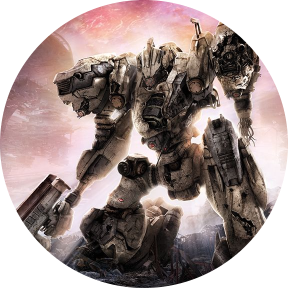

Profile |
About me |
Projects |
Contact |
|
 | Hi! Im Rachata DumrongparnichI have been Joined to BU since 2022. I Joined school of engineer of multi Media. My hobbys is play foolball and listen to rock music. About the game I like, Combining FromSoftware’s longstanding expertise in mech games with their signature action gameplay, ARMORED CORE VI FIRES OF RUBICON brings a brand-new action experience to the series. Players will pilot their mech in fast-paced, omni-directional battles, taking advantage of massive stages and their mech’s mobility on land and in the air to ensure victory. Customize Armored Core parts to suit a large variety of playstyles. Selecting different parts not only changes the mech’s attacks, but also directly affects its movement and battle style, so each mission can be approached with a unique mech strategy. Deploy a wide variety of offensive and defensive tactics at close and long range to take down powerful enemy bosses. About Me |
|---|
© 2022 Rachata Dumrongparnich